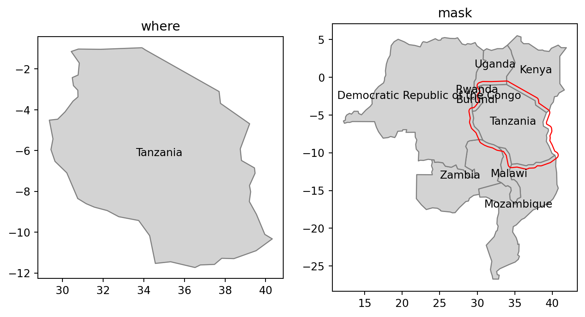

import numpy as np
import fiona
import geopandas as gpd
import shapely
import rasterio7 Geographic data I/O
7.1 Prerequisites
Let’s import the required packages:
7.2 Introduction
This chapter is about reading and writing geographic data. Geographic data import is essential for geocomputation: real-world applications are impossible without data. Data output is also vital, enabling others to use valuable new or improved datasets resulting from your work. Taken together, these processes of import/output can be referred to as data I/O.
Geographic data I/O is often done with few lines of code at the beginning and end of projects. It is often overlooked as a simple one step process. However, mistakes made at the outset of projects (e.g. using an out-of-date or in some way faulty dataset) can lead to large problems later down the line, so it is worth putting considerable time into identifying which datasets are available, where they can be found and how to retrieve them. These topics are covered in Section 7.3, which describes various geoportals, which collectively contain many terabytes of data, and how to use them. To further ease data access, a number of packages for downloading geographic data have been developed, as described in Section 7.4.
There are many geographic file formats, each of which has pros and cons, described in Section 7.6. The process of reading and writing files in formats efficiently is covered in Sections Section 7.7 and Section 7.8, respectively. The final Section Section 7.9 demonstrates methods for saving visual outputs (maps), in preparation for Chapter 8 on visualization.
7.3 Retrieving open data
7.4 Geographic data packages
7.5 Geographic web services
7.6 File formats
Geographic datasets are usually stored as files or in spatial databases. File formats can either store vector or raster data, while spatial databases such as PostGIS can store both. The large variety of file formats may seem bewildering, but there has been much consolidation and standardization since the beginnings of GIS software in the 1960s when the first widely distributed program (SYMAP) for spatial analysis was created at Harvard University [@coppock_history_1991].
GDAL (which should be pronounced “goo-dal”, with the double “o” making a reference to object-orientation), the Geospatial Data Abstraction Library, has resolved many issues associated with incompatibility between geographic file formats since its release in 2000. GDAL provides a unified and high-performance interface for reading and writing of many raster and vector data formats. Many open and proprietary GIS programs, including GRASS, ArcGIS and QGIS, use GDAL behind their GUIs for doing the legwork of ingesting and spitting out geographic data in appropriate formats.
GDAL provides access to more than 200 vector and raster data formats. Table 7.1 presents some basic information about selected and often used spatial file formats.
| Name | Extension | Info | Type | Model |
|---|---|---|---|---|
| ESRI Shapefile | .shp (the main file) |
Popular format consisting of at least three files. No support for: files > 2GB;mixed types; names > 10 chars; cols > 255. | Vector | Partially open |
| GeoJSON | .geojson |
Extends the JSON exchange format by including a subset of the simple feature representation; mostly used for storing coordinates in longitude and latitude; it is extended by the TopoJSON format | Vector | Open |
| KML | .kml |
XML-based format for spatial visualization, developed for use with Google Earth. Zipped KML file forms the KMZ format. | Vector | Open |
| GPX | .gpx |
XML schema created for exchange of GPS data. | Vector | Open |
| FlatGeobuf | .fgb |
Single file format allowing for quick reading and writing of vector data. Has streaming capabilities. | Vector | Open |
| GeoTIFF | .tif/.tiff |
Popular raster format. A TIFF file containing additional spatial metadata. | Raster | Open |
| Arc ASCII | .asc |
Text format where the first six lines represent the raster header, followed by the raster cell values arranged in rows and columns. | Raster | Open |
| SQLite/SpatiaLite | .sqlite |
Standalone relational database, SpatiaLite is the spatial extension of SQLite. | Vector and raster | Open |
| ESRI FileGDB | .gdb |
Spatial and nonspatial objects created by ArcGIS. Allows: multiple feature classes; topology. Limited support from GDAL. | Vector and raster | Proprietary |
| GeoPackage | .gpkg |
Lightweight database container based on SQLite allowing an easy and platform-independent exchange of geodata | Vector and (very limited) raster | Open |
An important development ensuring the standardization and open-sourcing of file formats was the founding of the Open Geospatial Consortium (OGC) in 1994. Beyond defining the simple features data model (see Section 1.2.4), the OGC also coordinates the development of open standards, for example as used in file formats such as KML and GeoPackage. Open file formats of the kind endorsed by the OGC have several advantages over proprietary formats: the standards are published, ensure transparency and open up the possibility for users to further develop and adjust the file formats to their specific needs.
ESRI Shapefile is the most popular vector data exchange format; however, it is not an open format (though its specification is open). It was developed in the early 1990s and has a number of limitations. First of all, it is a multi-file format, which consists of at least three files. It only supports 255 columns, column names are restricted to ten characters and the file size limit is 2 GB. Furthermore, ESRI Shapefile does not support all possible geometry types, for example, it is unable to distinguish between a polygon and a multipolygon. Despite these limitations, a viable alternative had been missing for a long time. In the meantime, GeoPackage emerged, and seems to be a more than suitable replacement candidate for ESRI Shapefile. GeoPackage is a format for exchanging geospatial information and an OGC standard. The GeoPackage standard describes the rules on how to store geospatial information in a tiny SQLite container. Hence, GeoPackage is a lightweight spatial database container, which allows the storage of vector and raster data but also of non-spatial data and extensions. Aside from GeoPackage, there are other geospatial data exchange formats worth checking out (Table 7.1).
The GeoTIFF format seems to be the most prominent raster data format. It allows spatial information, such as the CRS definition and the transformation matrix (see Section 1.3.2), to be embedded within a TIFF file. Similar to ESRI Shapefile, this format was firstly developed in the 1990s, but as an open format. Additionally, GeoTIFF is still being expanded and improved. One of the most significant recent addition to the GeoTIFF format is its variant called COG (Cloud Optimized GeoTIFF). Raster objects saved as COGs can be hosted on HTTP servers, so other people can read only parts of the file without downloading the whole file (see Sections 8.6.2 and 8.7.2…).
There is also a plethora of other spatial data formats that we do not explain in detail or mention in Table 7.1 due to the book limits. If you need to use other formats, we encourage you to read the GDAL documentation about vector and raster drivers. Additionally, some spatial data formats can store other data models (types) than vector or raster. It includes LAS and LAZ formats for storing lidar point clouds, and NetCDF and HDF for storing multidimensional arrays.
Finally, spatial data is also often stored using tabular (non-spatial) text formats, including CSV files or Excel spreadsheets. This can be convenient to share spatial datasets with people who, or software that, struggle with spatial data formats.
7.7 Data input (I)
Executing commands such as geopandas.read_file (the main function we use for loading vector data) or rasterio.open+.read (the main functions used for loading raster data) silently sets off a chain of events that reads data from files. Moreover, there are many Python packages containing a wide range of geographic data or providing simple access to different data sources. All of them load the data into the Python environment or, more precisely, assign objects to your workspace, stored in RAM and accessible within the Python session.
7.7.1 Vector data
Spatial vector data comes in a wide variety of file formats. Most popular representations such as .shp, .geojson, and .gpkg files can be imported and exported with geopandas functions read_file and to_file (covered in Section @ref(sec-data-output)), respectively.
geopandas uses GDAL to read and write data, via fiona (the default) or pyogrio packages (a recently developed alternative to fiona). After fiona is imported, the command fiona.supported_drivers can be used to list drivers available to GDAL, including whether they can (r), append (a), or write (w) data, or all three:
fiona.supported_drivers{'DXF': 'rw',
'CSV': 'raw',
'OpenFileGDB': 'raw',
'ESRIJSON': 'r',
'ESRI Shapefile': 'raw',
'FlatGeobuf': 'raw',
'GeoJSON': 'raw',
'GeoJSONSeq': 'raw',
'GPKG': 'raw',
'GML': 'rw',
'OGR_GMT': 'rw',
'GPX': 'rw',
'MapInfo File': 'raw',
'DGN': 'raw',
'S57': 'r',
'SQLite': 'raw',
'TopoJSON': 'r'}Other, less common, drivers can be “activated” by manually supplementing fiona.supported_drivers. The first argument of the geopandas versatile data import function gpd.read_file is filename, which is typically a string, but can also be a file connection. The content of a string could vary between different drivers. In most cases, as with the ESRI Shapefile (.shp) or the GeoPackage format (.gpkg), the filename argument would be a path or a URL to an actual file, such as geodata.gpkg. The driver is automatically selected based on the file extension, as demonstrated for a .gpkg file below:
world = gpd.read_file('data/world.gpkg')
world| iso_a2 | name_long | continent | ... | lifeExp | gdpPercap | geometry | |
|---|---|---|---|---|---|---|---|
| 0 | FJ | Fiji | Oceania | ... | 69.960000 | 8222.253784 | MULTIPOLYGON (((-180.00000 -16.... |
| 1 | TZ | Tanzania | Africa | ... | 64.163000 | 2402.099404 | MULTIPOLYGON (((33.90371 -0.950... |
| 2 | EH | Western Sahara | Africa | ... | NaN | NaN | MULTIPOLYGON (((-8.66559 27.656... |
| ... | ... | ... | ... | ... | ... | ... | ... |
| 174 | XK | Kosovo | Europe | ... | 71.097561 | 8698.291559 | MULTIPOLYGON (((20.59025 41.855... |
| 175 | TT | Trinidad and Tobago | North America | ... | 70.426000 | 31181.821196 | MULTIPOLYGON (((-61.68000 10.76... |
| 176 | SS | South Sudan | Africa | ... | 55.817000 | 1935.879400 | MULTIPOLYGON (((30.83385 3.5091... |
177 rows × 11 columns
For some drivers, such as a File Geodatabase (OpenFileGDB), filename could be provided as a folder name. GeoJSON string can also be read from a character string:
gpd.read_file('{"type":"Point","coordinates":[34.838848,31.296301]}')| geometry | |
|---|---|
| 0 | POINT (34.83885 31.29630) |
Alternatively, the gpd.read_postgis function can be used to read a vector layer from a PostGIS database.
Some vector formats, such as GeoPackage, can store multiple data layers. By default, gpd.read_file automatically reads the first layer of the file specified in filename. However, using the layer argument you can specify any other layer.
The gpd.read_file function also allows for reading just parts of the file into RAM with two possible mechanisms. The first one is related to the where argument, which allows specifying what part of the data to read using an SQL WHERE expression. An example below extracts data for Tanzania only (Figure …). It is done by specifying that we want to get all rows for which name_long equals to "Tanzania":
tanzania = gpd.read_file('data/world.gpkg', where='name_long="Tanzania"')
tanzania| iso_a2 | name_long | continent | ... | lifeExp | gdpPercap | geometry | |
|---|---|---|---|---|---|---|---|
| 0 | TZ | Tanzania | Africa | ... | 64.163 | 2402.099404 | MULTIPOLYGON (((33.90371 -0.950... |
1 rows × 11 columns
If you do not know the names of the available columns, a good approach is to just read one row of the data using the rows argument, which can be used to read the first N rows, then use the .columns property to examine the column names:
gpd.read_file('data/world.gpkg', rows=1).columnsIndex(['iso_a2', 'name_long', 'continent', 'region_un', 'subregion', 'type',
'area_km2', 'pop', 'lifeExp', 'gdpPercap', 'geometry'],
dtype='object')The second mechanism uses the mask argument to filter data based on intersection with an existing geometry. This argument expects a geometry (GeoDataFrame, GeoSeries, or shapely) representing the area where we want to extract the data. Let’s try it using a small example—we want to read polygons from our file that intersect with the buffer of 50,000 \(m\) of Tanzania’s borders. To do it, we need to (a) transform the geometry to a projected CRS (such as EPSG:32736), (b) prepare our “filter” by creating the buffer (Section 4.3.3), and (c) transform back to the original CRS to be used as a mask:
tanzania_buf = tanzania.to_crs(32736).buffer(50000).to_crs(4326)
tanzania_buf.iloc[0]Now, we can apply this “filter” using the mask argument.
tanzania_neigh = gpd.read_file('data/world.gpkg', mask=tanzania_buf)
tanzania_neigh| iso_a2 | name_long | continent | ... | lifeExp | gdpPercap | geometry | |
|---|---|---|---|---|---|---|---|
| 0 | MZ | Mozambique | Africa | ... | 57.099 | 1079.823866 | MULTIPOLYGON (((34.55999 -11.52... |
| 1 | ZM | Zambia | Africa | ... | 60.775 | 3632.503753 | MULTIPOLYGON (((30.74001 -8.340... |
| 2 | MW | Malawi | Africa | ... | 61.932 | 1090.367208 | MULTIPOLYGON (((32.75938 -9.230... |
| ... | ... | ... | ... | ... | ... | ... | ... |
| 6 | BI | Burundi | Africa | ... | 56.688 | 803.172837 | MULTIPOLYGON (((30.46967 -2.413... |
| 7 | UG | Uganda | Africa | ... | 59.224 | 1637.275081 | MULTIPOLYGON (((33.90371 -0.950... |
| 8 | RW | Rwanda | Africa | ... | 66.188 | 1629.868866 | MULTIPOLYGON (((30.41910 -1.134... |
9 rows × 11 columns
Our result, shown in Figure 7.1, contains Tanzania and every country within its 50,000 \(m\) buffer. Note that the last two expressions are used to add text labels with the name_long of each country, placed at the country centroid:
fig, axes = plt.subplots(ncols=2, figsize=(9,5))
tanzania.plot(ax=axes[0], color='lightgrey', edgecolor='grey')
tanzania_neigh.plot(ax=axes[1], color='lightgrey', edgecolor='grey')
tanzania_buf.plot(ax=axes[1], color='none', edgecolor='red')
axes[0].set_title('where')
axes[1].set_title('mask')
tanzania.apply(lambda x: axes[0].annotate(text=x['name_long'], xy=x.geometry.centroid.coords[0], ha='center'), axis=1)
tanzania_neigh.apply(lambda x: axes[1].annotate(text=x['name_long'], xy=x.geometry.centroid.coords[0], ha='center'), axis=1);
where query (left) and a mask (right)Often we need to read CSV files (or other tabular formats) which have x and y coordinate columns, and turn them into a GeoDataFrame with point geometries. To do that, we can import the file using pandas (e.g., pd.read_csv or pd.read_excel), then go from DataFrame to GeoDataFrame using the gpd.points_from_xy function, as shown earlier in the book (See Section 1.2.6 and Section 3.3.4). For example, the table cycle_hire_xy.csv, where the coordinates are stored in the X and Y columns in EPSG:4326, can be imported, converted to a GeoDataFrame, and plotted, as follows:
cycle_hire = pd.read_csv('data/cycle_hire_xy.csv')
geom = gpd.points_from_xy(cycle_hire['X'], cycle_hire['Y'], crs=4326)
geom = gpd.GeoSeries(geom)
cycle_hire_xy = gpd.GeoDataFrame(data=cycle_hire, geometry=geom)
cycle_hire_xy.plot();
Instead of columns describing ‘XY’ coordinates, a single column can also contain the geometry information. Well-known text (WKT), well-known binary (WKB), and the GeoJSON formats are examples of this. For instance, the world_wkt.csv file has a column named WKT representing polygons of the world’s countries. To import and convert it to a GeoDataFrame, we can apply the shapely.wkt.loads function (Section 1.2.5) on WKT strings, to convert them into shapely geometries:
world_wkt = pd.read_csv('data/world_wkt.csv')
world_wkt['geometry'] = world_wkt['WKT'].apply(shapely.wkt.loads)
world_wkt = gpd.GeoDataFrame(world_wkt)
world_wkt.plot();
Note
Not all of the supported vector file formats store information about their coordinate reference system. In these situations, it is possible to add the missing information using the .set_crs function. Please refer also to Section 6.4 for more information.
As a final example, we will show how geopandas also reads KML files. A KML file stores geographic information in XML format—a data format for the creation of web pages and the transfer of data in an application-independent way (Nolan and Lang 2014 …). Here, we access a KML file from the web. First, we need to “activate” the KML driver, which isn’t available by default (see above):
fiona.supported_drivers['KML'] = 'r'This file contains more than one layer. To list the available layers, we can use the fiona.listlayers function:
u = 'https://developers.google.com/kml/documentation/KML_Samples.kml'
fiona.listlayers(u)['Placemarks',
'Highlighted Icon',
'Paths',
'Google Campus',
'Extruded Polygon',
'Absolute and Relative']Finally, we can choose the first layer Placemarks and read it, using gpd.read_file with an additional layer argument:
placemarks = gpd.read_file(u, layer='Placemarks')7.7.2 Raster data
Similar to vector data, raster data comes in many file formats with some of them supporting multilayer files. rasterio.open is used to create a file connection to a raster file, which can be subsequently used to read the metadata and/or the values, as shown previously (Section 1.3.2). For example:
src = rasterio.open('data/srtm.tif')
src<open DatasetReader name='data/srtm.tif' mode='r'>All of the previous examples read spatial information from files stored on your hard drive. However, GDAL also allows reading data directly from online resources, such as HTTP/HTTPS/FTP web resources. The only thing we need to do is to add a /vsicurl/ prefix before the path to the file. Let’s try it by connecting to the global monthly snow probability at 500 m resolution for the period 2000-2012 (T. Hengl 2021 add reference…). Snow probability for December is stored as a Cloud Optimized GeoTIFF (COG) file (see Section 7.6). To read an online file, we just need to provide its URL together with the /vsicurl/ prefix:
url = "/vsicurl/https://zenodo.org/record/5774954/files/clm_snow.prob_esacci.dec_p.90_500m_s0..0cm_2000..2012_v2.0.tif"
src = rasterio.open(url)
src<open DatasetReader name='/vsicurl/https://zenodo.org/record/5774954/files/clm_snow.prob_esacci.dec_p.90_500m_s0..0cm_2000..2012_v2.0.tif' mode='r'>In the example above rasterio.open creates a connection to the file without obtaining any values, as we did for the local srtm.tif file. The values can read, into an ndarray, using the .read method of the file connection (Section 1.3.2). This allows us also to just read a small portion of the data without downloading the entire file. This is very useful when working with large datasets hosted online from resource-constrained computing environments such as laptops.
Another option is to extract raster values at particular points, directly from the file connection, using the .sample method (see Section 3.4.1). For example, we can get the snow probability for December in Reykjavik (70%) by specifying its coordinates and applying .sample:
values = src.sample([(-21.94, 64.15)])
list(values)[array([70], dtype=uint8)]The example above efficiently extracts and downloads a single value instead of the entire GeoTIFF file, saving valuable resources. The /vsicurl/ prefix also works for vector file formats, enabling you to import datasets from online storage with geopandas just by adding it before the vector file URL.
Importantly, /vsicurl/ is not the only prefix provided by GDAL—many more exist, such as /vsizip/ to read spatial files from ZIP archives without decompressing them beforehand or /vsis3/ for on-the-fly reading files available in AWS S3 buckets. You can learn more about it at https://gdal.org/user/virtual_file_systems.html.
(To add example of reading rectangular extent…)
7.8 Data output (O)
Writing geographic data allows you to convert from one format to another and to save newly created objects for permanent storage. Depending on the data type (vector or raster), object class (e.g., GeoDataFrame), and type and amount of stored information (e.g., object size, range of values), it is important to know how to store spatial files in the most efficient way. The next two sections will demonstrate how to do this.
7.8.1 Vector data
The counterpart of gpd.read_file is the .to_file method that a GeoDataFrame has. It allows you to write GeoDataFrame objects to a wide range of geographic vector file formats, including the most common, such as .geojson, .shp and .gpkg. Based on the file name, .to_file decides automatically which driver to use. The speed of the writing process depends also on the driver.
world.to_file('output/world.gpkg')Note: if you try to write to the same data source again, the function will overwrite the file:
world.to_file('output/world.gpkg')Instead of overwriting the file, we could add a new layer to the file with mode='a' (“append” mode, as opposed to the default mode='w' for “write” mode). Appending is supported by several spatial formats, including GeoPackage. For example:
world.to_file('output/world_many_features.gpkg')
world.to_file('output/world_many_features.gpkg', mode='a')Here, world_many_features.gpkg will contain a polygonal layer named world with two “copies” of each country (that is 177×2=354 features, whereas the world layer has 177 features).
Alternatively, you can create another, separate, layer, within the same file. The GeoPackage format also supports multiple layers within one file. For example:
world.to_file('output/world_many_layers.gpkg')
world.to_file('output/world_many_layers.gpkg', layer='world2')In this case, world_many_layers.gpkg has two “layers”, world_many_layers (same as the file name, when layer is unspecified) and world2. Incidentally, the contents of the two layers is identical, but this doesn’t have to be so. Each layer from such a file can be imported separately, as in:
gpd.read_file('output/world_many_layers.gpkg', layer='world_many_layers').head(1)| iso_a2 | name_long | continent | ... | lifeExp | gdpPercap | geometry | |
|---|---|---|---|---|---|---|---|
| 0 | FJ | Fiji | Oceania | ... | 69.96 | 8222.253784 | MULTIPOLYGON (((-180.00000 -16.... |
1 rows × 11 columns
gpd.read_file('output/world_many_layers.gpkg', layer='world2').head(1)| iso_a2 | name_long | continent | ... | lifeExp | gdpPercap | geometry | |
|---|---|---|---|---|---|---|---|
| 0 | FJ | Fiji | Oceania | ... | 69.96 | 8222.253784 | MULTIPOLYGON (((-180.00000 -16.... |
1 rows × 11 columns
7.8.2 Raster data
To write a raster file using rasterio, we need to pass a raster file path to rasterio.open, in writing ('w') mode. This implies creating a new empty file (or overwriting an existing one). As opposed to read ('r', the default) mode, the rasterio.open function needs quite a lot of information, in addition to the file path and mode:
- An array with the raster values
- Metadata describing the raster format and spatial properties
The metadata needs to specify the following properties:
driver—The file format (The recommendation is'GTiff'for GeoTIFF)height—Number of rowswidth—Number of columnscount—Number of bandsnodata—The value which represents “No Data”, if anydtype—The raster data type, one of numpy types (e.g.,np.int64)crs—The CRS, using an EPSG code (e.g.,4326)transform—The transform matrixcompress—A compression method to apply, such as'lzw'. This is optional and most useful for large rasters. Note that, at the time of writing, this doesn’t work well for writing multiband rasters.
Once the file connection with the right metadata is ready, we do the actual writing using the .write method of the file connection. If there are several bands we may execute the .write method several times, as in .write(a,n), where a is the array with band values and n is the band index (starting from 1, see below). When done, we close the file connection using the .close method. Some functions, such as rasterio.warp.reproject used for resampling and reprojecting, directly accept a file connection in 'w' mode, thus handling the writing (of a resampled or reprojected raster) for us.
Most of the properties are either straightforward to choose, based on our aims, (e.g., driver, crs, compress, nodata), or directly derived from the array with the raster values itself (e.g., height, width, count, dtype). The most complicated property is the transform, which specifies the raster origin and resolution. The transform is typically either obtained from an existing raster (serving as a “template”), or created from scratch based on manually specified origin and resolution values (e.g., using rasterio.transform.from_origin), or calculate automatically (e.g., using rasterio.warp.calculate_default_transform).
Earlier in the book, we have already demonstrated the four most common scenarios of writing rasters:
- Creating from scratch (Section 1.3.3)—We created and wrote two rasters from scratch by associating the
elevandgrainarrays with an arbitrary spatial extent. The custom arbitrarytransformcreated usingrasterio.transform.from_origin. - Aggregating (Section 4.4.3)—We wrote an aggregated a raster, by reading a resampled array from an exising raster, then updating the
transformusing.transform.scale. - Resampling (Section 4.4.4)—We resampled a raster into a custom grid, manually creating the
transformusingrasterio.transform.from_origin, then resampling and writing the output usingrasterio.warp.reproject. - Reprojecting (Section 6.9)—We reprojected a raster into another CRS, by automatically calculating an optimal
transformusingrasterio.warp.calculate_default_transform, then resampling and writing the output usingrasterio.warp.reproject.
A miminal example of writing a raster file named r.tif from scratch (i.e., the 1st scenario), to remind some of these concepts, is given below:
# An array with raster values
r = np.array([1,2,3,4]).reshape(2,2).astype(np.int8)
rarray([[1, 2],
[3, 4]], dtype=int8)# Calculating the transform
new_transform = rasterio.transform.from_origin(
west=-0.5,
north=51.5,
xsize=2,
ysize=2
)
new_transformAffine(2.0, 0.0, -0.5,
0.0, -2.0, 51.5)# Creating the file connection with the metadata
dst = rasterio.open(
'output/r.tif', 'w',
driver = 'GTiff',
height = r.shape[0],
width = r.shape[1],
count = 1,
dtype = r.dtype,
crs = 4326,
transform = new_transform
)
dst<open DatasetWriter name='output/r.tif' mode='w'># Writing the array values into the file
dst.write(r, 1)# Closing the file
dst.close()This code section creates a new file output/r.tif, which is a \(2 \times 2\) raster, having a 2 decimal degree resolution, with the top-left corner placed over London.
To summarize, the various scenarios differ in two aspects:
- The way that the
transformfor the output raster is obtained:- Imported from an existing raster (see below)
- Created from scratch, using
rasterio.transform.from_origin(Section 1.3.3) - Calculate automatically, using
rasterio.warp.calculate_default_transform(Section 6.9)
- The way that the raster is written:
- Using the
.writemethod, given an existing array (Section 1.3.3, Section 4.4.3) - Using
rasterio.warp.reprojectto calculate and write a resampled or reprojected array (Section 4.4.4, Section 6.9)
- Using the
To make the picture of raster export complete, there are three important concepts we haven’t covered yet: array and raster data types, writing multiband rasters, and handling “No Data” values.
Arrays (i.e., ndarray objects defined in package numpy) are used to store raster values when reading them from file, using .read (Section 1.3.2). All values in an array are of the same type, whereas the numpy package supports numerous numeric data types of various precision (and, accordingly, memory footprint). Raster formats, such as GeoTIFF, support exactly the same data types, which means that reading a raster file uses as little RAM as possible. The most relevant types are summarized in Table 7.2.
| Data type | Description |
|---|---|
int8 |
Integer in a single byte (-128 to 127) |
int16 |
Integer in 16 bits (-32768 to 32767) |
int32 |
Integer in 32 bits (-2147483648 to 2147483647) |
uint8 |
Unsigned integer (0 to 255) |
uint16 |
Unsigned integer (0 to 65535) |
uint32 |
Unsigned integer (0 to 4294967295) |
float16 |
Half-precision (16 bit) float (-65504 to 65504) |
float32 |
Single-precision (32 bit) float (1e-38 to 1e38) |
float64 |
Double-precision (64 bit) float (1e-308 to 1e308) |
The raster data type can be specified when writing a raster (see above). For an existing raster file, the data type is accessible through the .dtype property of the metadata:
rasterio.open('output/r.tif').meta['dtype']'int8'The file r.tif has the data type np.int8, which we specified when creating it according to the data type of the original array:
r.dtypedtype('int8')When reading the data back into the Python session, the array with the same data type is recreated:
rasterio.open('output/r.tif').read().dtypedtype('int8')Writing multiband rasters is similar to writing single-band rasters, only that we need to:
- Define the number of layers (the
countproperty in the metadata) that are going to be in the file we are creating - Execute the
.writemethod multiple times, once for each layer
For completeness, let’s demonstrate writing a multi-band raster named r3.tif, which is similar to r.tif, but having three bands with values r, r*2, and r*3 (i.e., the array r multiplied by 1, 2, or 3). Since most of the metadata is going to be the same, this is also a good opportunity to (re-)demonstrate updating an existing metadata object rather than creating one from scratch.
First, let’s make a copy of the metadata we already have in r.tif:
dst_kwds = rasterio.open('output/r.tif').meta.copy()
dst_kwds{'driver': 'GTiff',
'dtype': 'int8',
'nodata': None,
'width': 2,
'height': 2,
'count': 1,
'crs': CRS.from_epsg(4326),
'transform': Affine(2.0, 0.0, -0.5,
0.0, -2.0, 51.5)}Second, we update the count entry, replacing 1 (single-band) with 3 (three-band):
dst_kwds.update(count=3)
dst_kwds{'driver': 'GTiff',
'dtype': 'int8',
'nodata': None,
'width': 2,
'height': 2,
'count': 3,
'crs': CRS.from_epsg(4326),
'transform': Affine(2.0, 0.0, -0.5,
0.0, -2.0, 51.5)}Finally, we can create a file connection using the updated metadata and then write the values of the three bands:
dst = rasterio.open('output/r3.tif', 'w', **dst_kwds)
dst.write(r, 1)
dst.write(r*2, 2)
dst.write(r*3, 3)
dst.close()As a result, a three-band raster named r3.tif is created.
Rasters often contain “No Data” values, representing missing data, e.g., unreliable measurement due to clouds or pixels outside of the photographed extent. In a numpy ndarray object, “No Data” values may be represented by the special np.nan value. However, due to computer memory limitations, only arrays of type float can contain np.nan, while arrays of type int cannot. For int rasters containing “No Data”, we typically mark missing data with a specific value beyond the valid range (e.g., -9999). The missing data “flag” is stored in the file (set through the nodata property of the file connection, see above). When reading an int raster with “No Data” back into Python, we need to be aware of these flags. Let’s demonstrate through examples.
We will start with the simpler case, rasters of type float. Since float arrays may contain the “native” value np.nan, representing “No Data” is straightforward. For example, suppose that we have a float array with np.nan:
r = np.array([1.1,2.1,np.nan,4.1]).reshape(2,2)
rarray([[1.1, 2.1],
[nan, 4.1]])r.dtypedtype('float64')When writing the array to file, we do not need to specify any particular nodata value:
dst = rasterio.open(
'output/r_nodata_float.tif', 'w',
driver = 'GTiff',
height = r.shape[0],
width = r.shape[1],
count = 1,
dtype = r.dtype,
crs = 4326,
transform = new_transform
)
dst.write(r, 1)
dst.close()This is equivalent to nodata=None:
rasterio.open('output/r_nodata_float.tif').meta{'driver': 'GTiff',
'dtype': 'float64',
'nodata': None,
'width': 2,
'height': 2,
'count': 1,
'crs': CRS.from_epsg(4326),
'transform': Affine(2.0, 0.0, -0.5,
0.0, -2.0, 51.5)}Reading from the raster back into the Python session reproduces the same exact array, with np.nan:
rasterio.open('output/r_nodata_float.tif').read()array([[[1.1, 2.1],
[nan, 4.1]]])Now, suppose that we have an np.int32 array with missing data, which is inevitably flagged using a specific int value such as -9999 (remember that we can’t store np.nan in an int array!):
r = np.array([1,2,-9999,4]).reshape(2,2).astype(np.int32)
rarray([[ 1, 2],
[-9999, 4]], dtype=int32)r.dtypedtype('int32')When writing the array to file, we must specify nodata=-9999 to keep track of our “No Data” flag:
dst = rasterio.open(
'output/r_nodata_int.tif', 'w',
driver = 'GTiff',
height = r.shape[0],
width = r.shape[1],
count = 1,
dtype = r.dtype,
nodata = -9999,
crs = 4326,
transform = new_transform
)
dst.write(r, 1)
dst.close()Examining the metadata confirms that the nodata=-9999 setting was stored in the file r_nodata_int.tif.
rasterio.open('output/r_nodata_int.tif').meta{'driver': 'GTiff',
'dtype': 'int32',
'nodata': -9999.0,
'width': 2,
'height': 2,
'count': 1,
'crs': CRS.from_epsg(4326),
'transform': Affine(2.0, 0.0, -0.5,
0.0, -2.0, 51.5)}If you try to open the file in GIS software, such as QGIS, you will see the missing data interpreted (e.g., the pixel shown as blank), meaning that the software is aware of the flag. However, reading the data back into Python reproduces an int array with -9999, for the same reason stated before:
src = rasterio.open('output/r_nodata_int.tif')
r = src.read()
rarray([[[ 1, 2],
[-9999, 4]]], dtype=int32)The Python user must thefore be mindful of “No Data” int rasters, for example to avoid interpreting the value -9999 literally. For example, if we “forget” about the nodata flag, the literal calculation of the .mean would incorrectly include the value -9999:
r.mean()-2498.0There are two basic ways to deal with the situation:
- Converting the raster to
float - Using “No Data” masks
First, particularly with small rasters where memory constraints are irrelevant, it may be more convenient to go from int to float, to gain the ability of the natural np.nan representation. Here is how we can do this with r_nodata_int.tif. We detect the missing data flag, conver the raster to float, and assign np.nan into the cells that are supposed to be missing:
mask = r == src.nodata
r = r.astype(np.float64)
r[mask] = np.nan
rarray([[[ 1., 2.],
[nan, 4.]]])From there on, we deal with np.nan the usual way, such as using np.nanmean to calculate the mean excluding “No Data”:
np.nanmean(r)2.3333333333333335The second approach is to read the values into a so-called “masked” array, using the argument masked=True. A masked array can be thought of as an extended ndarray, with two components: .data (the values) and .mask (a corresponding boolean array marking “No Data” values):
r = src.read(masked=True)
rmasked_array(
data=[[[1, 2],
[--, 4]]],
mask=[[[False, False],
[ True, False]]],
fill_value=-9999,
dtype=int32)Using masked arrays is beyond the scope of this book. However, the basic idea is that many numpy operations “honor” the mask, so that the user does not have to keep track of the way that “No Data” values are marked, similarly to the natural np.nan representation. For example, the .mean of a masked array ignores the value -9999, because it is masked, taking into account just the valid values 1, 2, and 4:
r.mean()2.3333333333333335Keep in mind that, somewhat confusingly, float rasters may represent “No Data” using a specific value (such as -9999.0), instead, or in addition to (!), the native np.nan representation. In such cases, the same considerations shown for int apply to float rasters as well.
7.9 Visual outputs
…